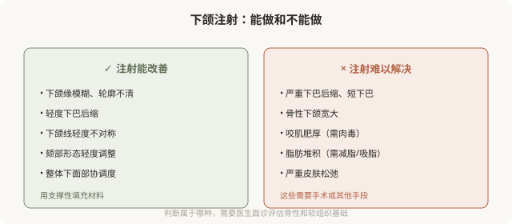

先说结论：下颌线和下颏的注射可以改善轮廓模糊、下颌缘不清、下巴轻度后缩等问题，但效果受骨性基础限制，不能替代手术。对于明显的骨性问题（严重后缩、短下巴），注射只能有限改善，手术往往更合适。同时下颌区域有面动脉等重要血管，注射需熟悉解剖。理解注射在轮廓改善上的能力边界，才能建立合理预期。
下颌注射能改善什么

下颌注射的几个原则
- 支撑性材料：用高粘弹性、有支撑力的硬型透明质酸，能在骨面或深层形成稳定支撑。
- 深部注射：下颌缘和颏部常采用骨膜上深层注射，相对安全且支撑稳定。
- 熟悉面动脉解剖：下颌区域有面动脉及其分支走行，是重要血管风险区。
- 对称与比例：下颌和颏部的改善要考虑与整体面部的比例，避免“下巴过长”“下颌过方”等不协调。
- 剂量克制：下颌过度填充会显得“方”“重”，失去自然。
“垫下巴”的现实
很多人希望通过注射“垫出”明显的下巴。现实是：
- 轻度后缩：注射能有不错改善，用支撑性材料重塑颏部形态。
- 中度后缩：注射改善有限，可能需要较大剂量，增加不自然和风险。
- 重度后缩或短下巴：注射基本无效，假体或截骨手术更合适。
把注射当成手术的“轻量替代”，在明显骨性问题上往往不划算，效果有限、剂量大、不自然、花费也不低。对于需要结构性改变的下巴问题，手术（假体或颏成形）往往更合理。
下颌线的“清晰”
下颌缘模糊的原因多样：
- 容量流失：下颌骨吸收、软组织萎缩。
- 组织下移：皮肤和脂肪垫松弛下垂。
- 脂肪堆积：颌下脂肪堆积。
- 咬肌因素：咬肌与下颌线的关系。
注射主要针对容量和组织支撑问题。如果是脂肪堆积为主，吸脂或减脂更合适；如果是严重松弛，提升类项目或手术更有效。“打一针就有清晰下颌线”的说法，忽略了成因的复杂性。
联合治疗的常见组合
下面部轮廓改善常需联合：
- 肉毒瘦咬肌：处理肌肉型宽大。
- 填充塑下颌：处理容量和轮廓。
- 吸脂：处理脂肪堆积。
- 光电或手术：处理皮肤松弛。
联合的依据是成因，不是“都打一遍”。好的医生会判断你的下面部宽大或轮廓不清主要是哪个因素，针对性处理。
风险要点
- 血管栓塞：下颌区域面动脉及其分支，是相对高危区域。
- 不对称、过度填充：剂量和位置问题。
- 移位：材料扩散或层次不当。
- 触感不自然：材料太浅或型号不对。
- 影响表情：颏部过度填充影响唇部和表情活动。
决策前的硬要求
面诊下颌或颏部注射，至少做到：选择有轮廓注射经验的医生；当面评估是骨性、肌肉、脂肪还是容量问题；讨论预期能改善到什么程度；理解明显骨性问题需要手术；理解下颌血管风险。承诺“打一针就有完美下颌线/尖下巴”的机构，对它的能力边界不够诚实。
本文用于健康教育，不能替代面诊和个体化评估；下颌区域注射须由熟悉解剖的具备资质医师在正规医疗机构开展。